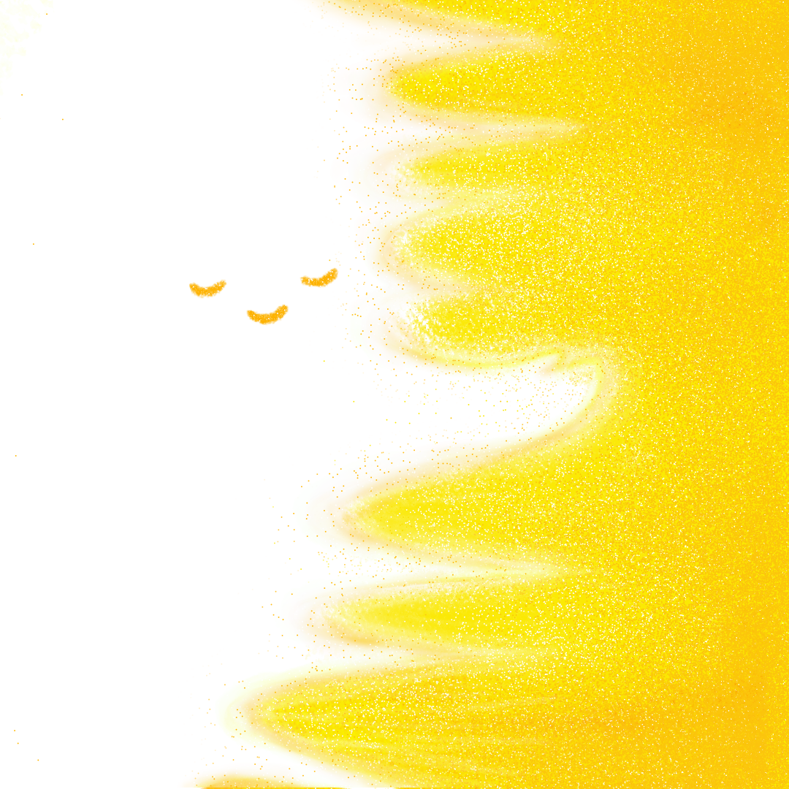
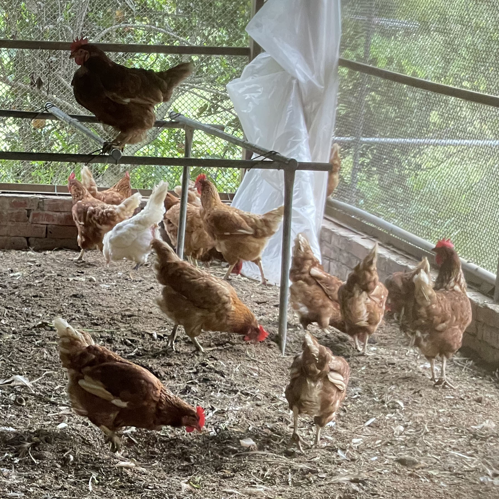

#06
蜜蜂是太陽的孩子



太陽繞地球一次的週期為21天，而一隻女王蜂，他生成需要16天，也就是說女王蜂並沒有走完完整的週期。
所以他永遠都是太陽的孩子，更精確的說，女王蜂可以說是停留在幼蟲階段，他比其他蜜蜂都接近幼蟲，所以他能夠產卵。
而工蜂生成需要21天，他保存了太陽完整的能量，所以他也是太陽的孩子，他在太陽中完全發展，且尚未進入地球，所以他不能產卵。
而雄蜂呢？他需要23-24天生成，也就是說他已經脫離了太陽的庇護，來到了地球，所以雄蜂是地球的動物，而雄蜂的繁殖能力，也是地球給的，因為只有地球的動物需要繁衍啊！